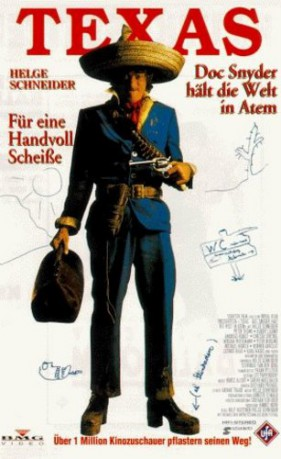

#11867 Texas - Doc Snyder hält die Welt in Atem
 
 IMDB-Wertung: 6.8 / 10
IMDB-Wertung: 6.8 / 10  Metascore: 0
Metascore: 0 
Texas - Doc Snyder keeps the world in suspense.
Jahr: 1993
Dauer: 85 Minuten
FSK: 6
Land: Deutschland Studio: Senator FilmTonspuren:
Untertitel:
Auflösung: 1080p (1920x872) Größe: 3020 MB
Genre: Komödie, Western
Regisseur: Ralf Huettner,  Helge Schneider
Helge Schneider
Drehbuch: Helge Schneider, Schringo van den Berg
Soundtrack: Helge Schneider
Darsteller:
 Peter Berling als Hank Snyder
Peter Berling als Hank Snyder- Michael Habeck als Buckliger (Elender)
 Ludger Pistor als Besserwisser
Ludger Pistor als Besserwisser- Helge Schneider als Doc Snyder
- Peter Thoms als Nasenmann
- Buddy Casino als Buddy Casino
- Andreas Kunze als Doc's Mutter
- Werner Abrolat als Sheriff
- Christa Strobel als Edeldame 1
- Mirjam Wiesemann als Edeldame 2
- Ludwig Haas als von Zitzewitz
- Rupert J. Seidel als Stotterer
- Wayne Bartlett als Saloonband
- Sergej Gleitmann als Saloonband
- Schringo van den Berg als Saloonband
- Helmut Kleinmann als Bürgermeister
- Charlie Weiss als Der liebe Gott
- Herbert Ranft als Barkeeper
- Uwe Lyko als 1. Henker
- Martin Breuer als 2. Henker
- Reinhard Glöder als Beerdigungsunternehmer
- Gerd Lohmeyer als Bankkassierer
- Franz-Joseph 'Pico' Schneider als Kutscher
- Matthias Scheele als Auszubildender
- Bratislav Metulskie als Bratislav Metulsky
- Kara Natas als Schmied
- Boris als Pferd
- Helmut Körschgen als Beerdigungsunternehmer / Assistent von 00 Schneider
Datei: X:\NEU\Texas - Doc Snyder hält die Welt in Atem (1993, FSK6, 1920x872).mkv seit 02.10.2019
 Es gibt insgesamt 187 Filme in der Gruppe 'NEU'
Es gibt insgesamt 187 Filme in der Gruppe 'NEU'